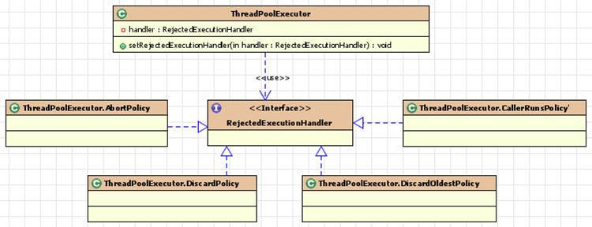

策略模式
2016-03-13 20:35:34
在策略模式中，一个类的行为或其算法可以在运行时更改。在有多种算法相似的情况下，使用if...else...所带来的复杂和难以维护。
优点：
- 1、算法可以自由切换
- 2、避免使用多重条件判断
- 3、扩展性良好
缺点：
- 1、策略类会增多
- 2、所有策略类都需要对外暴露
策略模式
public interface Strategy {
public int doOperation(int num1, int num2);
}
public class OperationAdd implements Strategy{
@Override
public int doOperation(int num1, int num2) {
return num1 + num2;
}
}
public class OperationSubstract implements Strategy{
@Override
public int doOperation(int num1, int num2) {
return num1 - num2;
}
}
public class OperationMultiply implements Strategy{
@Override
public int doOperation(int num1, int num2) {
return num1 * num2;
}
}
public class Context {
private Strategy strategy;
public Context(Strategy strategy){
this.strategy = strategy;
}
public int executeStrategy(int num1, int num2){
return strategy.doOperation(num1, num2);
}
}
public class StrategyPatternDemo {
public static void main(String[] args) {
Context context = new Context(new OperationAdd());
System.out.println("10 + 5 = " + context.executeStrategy(10, 5));
context = new Context(new OperationSubstract());
System.out.println("10 - 5 = " + context.executeStrategy(10, 5));
context = new Context(new OperationMultiply());
System.out.println("10 * 5 = " + context.executeStrategy(10, 5));
}
}
在JDK中ThreadPoolExecutor中的四种拒绝策略就是使用了策略模式